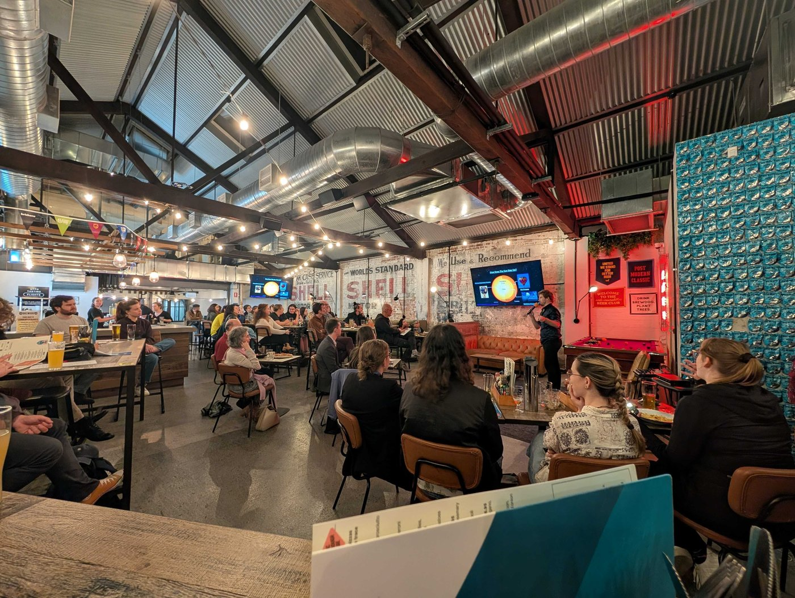

Latest News
Updates from the collaboration and partner
institutions.
 17 July
2026
17 July
2026
QUASAR is proud to announce that it will host the Astronomical Society of Australia's 2027
Annual Scientific Meeting in Brisbane, to be held 5 to 9 July 2027 at UQ's St Lucia campus.
Read full story →

18–20 May
2026
Four QUASAR researchers packed BrewDog Fortitude Valley over three nights at Pint of Science
Brisbane 2026, sharing talks on cosmic distances, supermassive black holes, gravitational waves,
and the search for dark matter.
Read full story →
 February 9,
2026
February 9,
2026
UQ, QUT, and UniSQ launch QUASAR: a strategic partnership that lines up astronomy, astrophysics, and space
science expertise as a cohesive front to strengthen Queensland’s research impact and HDR pipeline under
the southern sky.
Read full story →